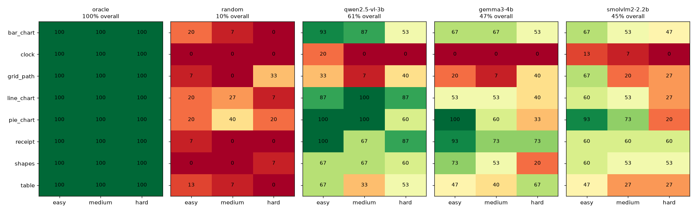
# Visual Task Factory: results Dataset: 360 items, 8 families x 3 difficulties, master seed 7. Validation: 360 items re-checked; answer re-derivation 360/360 agree; render probes 360/360 pass; byte-identical regeneration 360/360. ## Accuracy by model | model | overall | easy | medium | hard | unparseable | median latency | |---|---|---|---|---|---|---| | oracle | 100% | 100% | 100% | 100% | 0 | 0.0s | | random | 10% | 11% | 10% | 8% | 0 | 0.0s | | qwen2.5-vl-3b | 61% | 71% | 57% | 55% | 0 | 8.97s | | gemma3-4b | 47% | 57% | 44% | 41% | 1 | 18.49s | | smolvlm2-2.2b | 45% | 58% | 43% | 32% | 2 | 6.14s | ## Accuracy by family | family | oracle | random | qwen2.5-vl-3b | gemma3-4b | smolvlm2-2.2b | |---|---|---|---|---|---| | bar_chart | 100% | 9% | 78% | 62% | 56% | | clock | 100% | 0% | 7% | 0% | 7% | | grid_path | 100% | 13% | 27% | 22% | 38% | | line_chart | 100% | 18% | 91% | 49% | 47% | | pie_chart | 100% | 27% | 87% | 64% | 62% | | receipt | 100% | 2% | 84% | 80% | 60% | | shapes | 100% | 2% | 64% | 49% | 56% | | table | 100% | 7% | 51% | 51% | 33% | ## Question types (real models) | family/question | qwen2.5-vl-3b | gemma3-4b | smolvlm2-2.2b | n | |---|---|---|---|---| | bar_chart/count_above | 56% | 67% | 67% | 9 | | bar_chart/diff | 100% | 25% | 12% | 8 | | bar_chart/shortest | 100% | 86% | 71% | 7 | | bar_chart/tallest | 71% | 71% | 86% | 7 | | bar_chart/top3 | 50% | 0% | 0% | 4 | | bar_chart/value_of | 80% | 90% | 70% | 10 | | clock/minutes_to_hour | 22% | 0% | 0% | 9 | | clock/time | 3% | 0% | 8% | 36 | | grid_path/path_len | 12% | 12% | 17% | 24 | | grid_path/reachable | 88% | 62% | 88% | 8 | | grid_path/walls | 15% | 15% | 46% | 13 | | line_chart/crossings | 57% | 0% | 0% | 7 | | line_chart/highest_at | 100% | 85% | 85% | 13 | | line_chart/peak_month | 100% | 22% | 44% | 9 | | line_chart/value_at | 94% | 56% | 38% | 16 | | pie_chart/largest | 82% | 71% | 71% | 17 | | pie_chart/share_of | 89% | 53% | 53% | 19 | | pie_chart/smallest | 89% | 78% | 67% | 9 | | receipt/line_total | 100% | 88% | 82% | 17 | | receipt/priciest | 62% | 75% | 25% | 8 | | receipt/total | 100% | 100% | 100% | 11 | | receipt/units | 56% | 44% | 0% | 9 | | shapes/count_color | 100% | 33% | 33% | 3 | | shapes/count_combo | 91% | 73% | 82% | 11 | | shapes/count_kind | 11% | 22% | 33% | 9 | | shapes/largest_color | 100% | 33% | 67% | 3 | | shapes/leftmost_kind | 62% | 62% | 69% | 13 | | shapes/total | 67% | 33% | 17% | 6 | | table/col_sum | 20% | 0% | 0% | 10 | | table/count_gt | 17% | 17% | 33% | 12 | | table/lookup | 100% | 100% | 77% | 13 | | table/row_max | 60% | 80% | 10% | 10 | ## Knobs that hurt most Accuracy for each value of a difficulty knob, within one family (largest spread first; groups of 3 or more items). **qwen2.5-vl-3b** - bar_chart / label_rotation: 0: 86% (n=22), 30: 100% (n=8), 45: 100% (n=3), 60: 40% (n=5), 90: 43% (n=7) - pie_chart / n_slices: 3: 100% (n=9), 4: 100% (n=13), 5: 100% (n=4), 6: 80% (n=10), 7: 50% (n=8), 8: 100% (n=1) - pie_chart / colors: "distinct": 97% (n=35), "shades": 50% (n=10) - pie_chart / labels: "legend": 60% (n=15), "name": 100% (n=15), "pct": 100% (n=15) - pie_chart / start_angle: 0: 62% (n=8), 135: 100% (n=6), 45: 71% (n=7), 90: 96% (n=24) - bar_chart / gridlines: false: 53% (n=15), true: 90% (n=30) - bar_chart / near_tie: false: 90% (n=30), true: 53% (n=15) - bar_chart / size: [5.6, 4.2]: 53% (n=15), [6.4, 4.8]: 90% (n=30) **gemma3-4b** - pie_chart / start_angle: 0: 12% (n=8), 135: 83% (n=6), 45: 29% (n=7), 90: 88% (n=24) - pie_chart / labels: "legend": 33% (n=15), "name": 60% (n=15), "pct": 100% (n=15) - pie_chart / n_slices: 3: 100% (n=9), 4: 77% (n=13), 5: 50% (n=4), 6: 40% (n=10), 7: 50% (n=8), 8: 0% (n=1) - shapes / n_colors: 3: 73% (n=15), 5: 53% (n=15), 8: 20% (n=15) - pie_chart / colors: "distinct": 74% (n=35), "shades": 30% (n=10) - shapes / background: "noise": 20% (n=15), "plain": 63% (n=30) - shapes / overlap: false: 63% (n=30), true: 20% (n=15) - bar_chart / colors: "distinct": 70% (n=23), "shades": 29% (n=7), "single": 67% (n=15) **smolvlm2-2.2b** - pie_chart / n_slices: 3: 100% (n=9), 4: 92% (n=13), 5: 75% (n=4), 6: 20% (n=10), 7: 25% (n=8), 8: 0% (n=1) - pie_chart / labels: "legend": 20% (n=15), "name": 73% (n=15), "pct": 93% (n=15) - pie_chart / colors: "distinct": 77% (n=35), "shades": 10% (n=10) - bar_chart / label_rotation: 0: 59% (n=22), 30: 62% (n=8), 45: 0% (n=3), 60: 60% (n=5), 90: 57% (n=7) - line_chart / n_series: 2: 59% (n=22), 3: 53% (n=15), 4: 0% (n=8) - bar_chart / colors: "distinct": 61% (n=23), "shades": 14% (n=7), "single": 67% (n=15) - pie_chart / start_angle: 0: 38% (n=8), 135: 67% (n=6), 45: 29% (n=7), 90: 79% (n=24) - grid_path / n: 10: 27% (n=15), 5: 67% (n=15), 7: 20% (n=15)
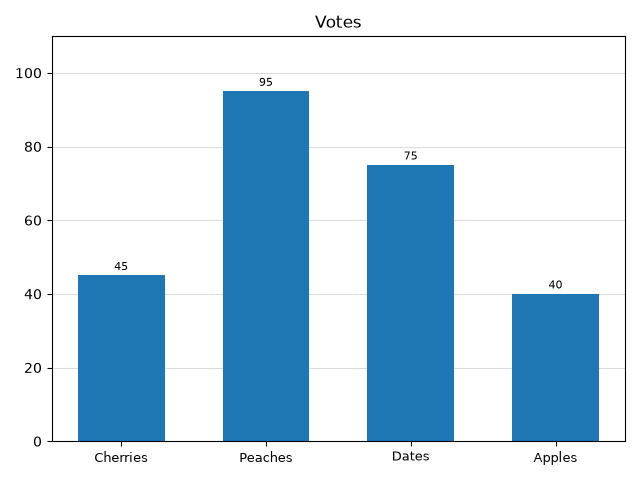
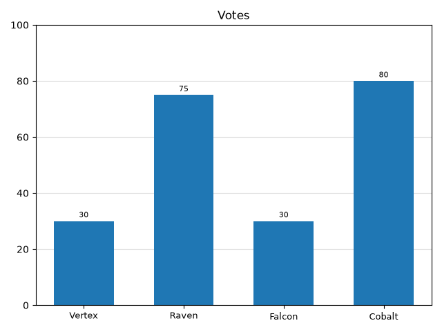
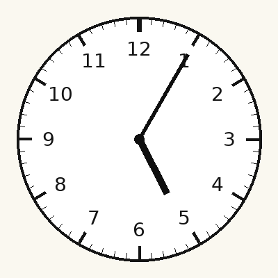
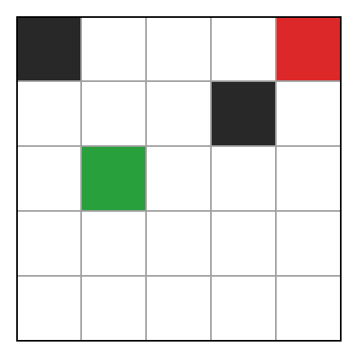
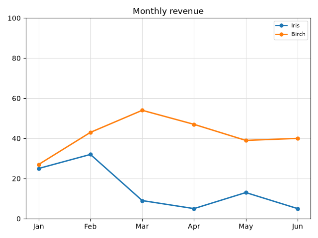
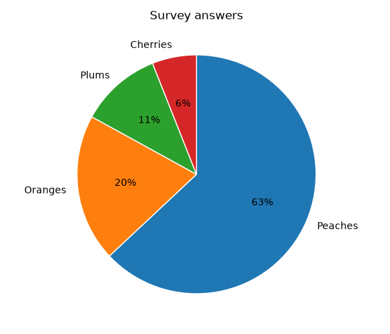
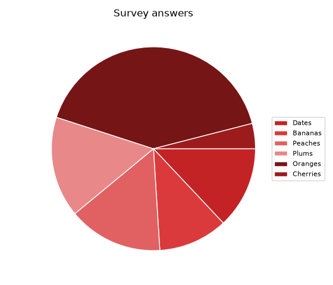
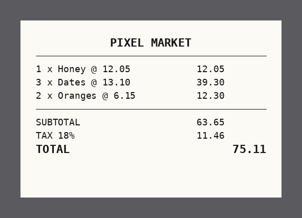
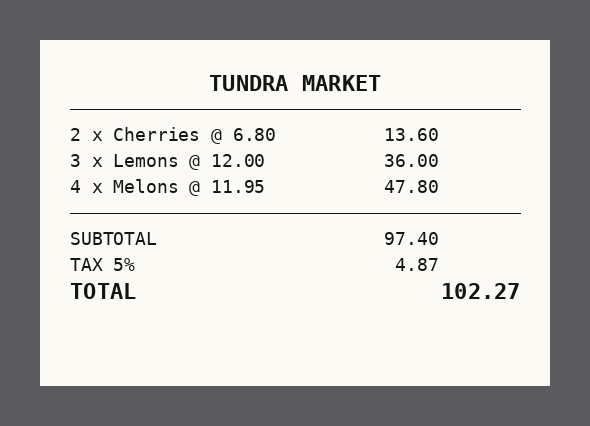
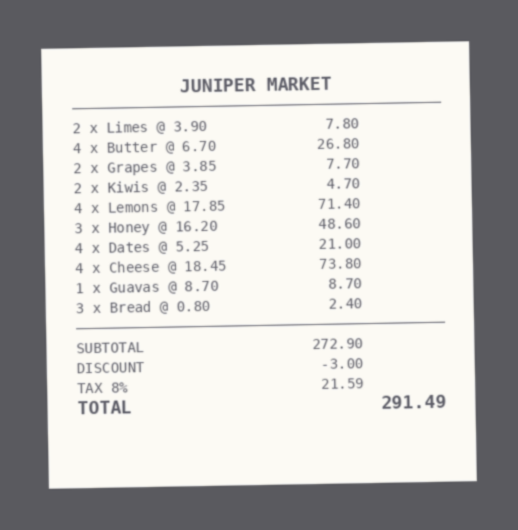
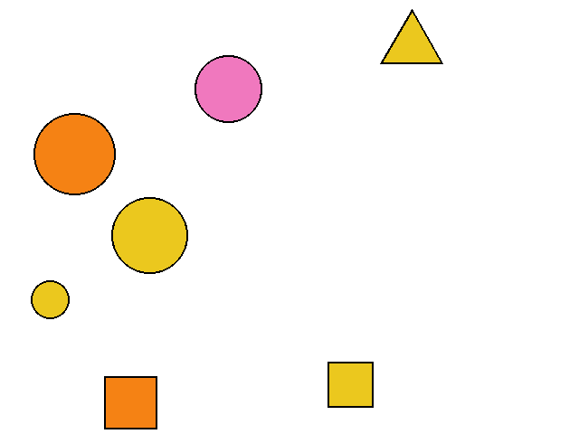
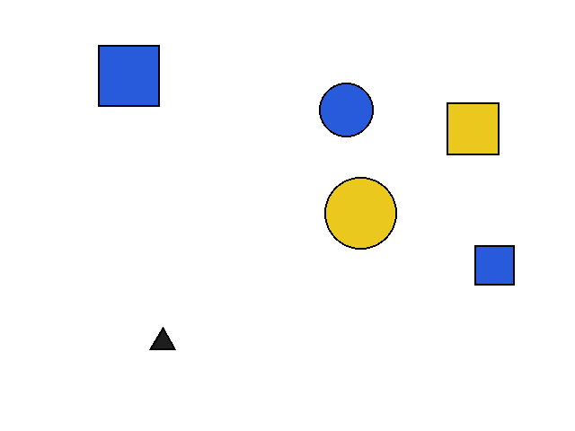
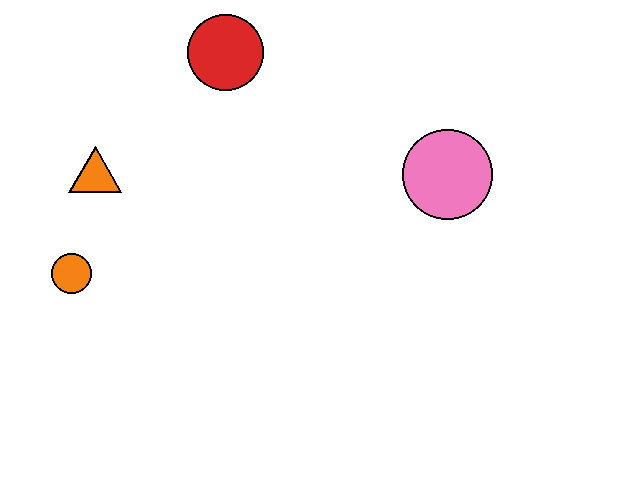
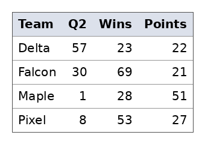
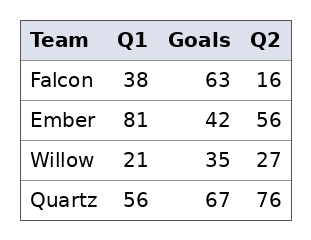
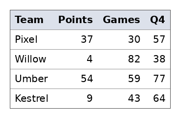